TET4100 SLT-1: Kretsteori, Dynamikk & PI-Regulering
En grundig, pedagogisk steg-for-steg gjennomgang av alle 6 oppgaver med originale kretsskjemaer fra NTNU, oversatte oppgavetekster, intuitive forklaringer og fullstendige matematiske utregninger.
1. Fysiske Lover & Sjokk
Spoler motsetter seg brå strømendring (flyback-spenningsspiss) og kondensatorer motsetter seg brå spenningsendring (inrush-strømsjokk).
2. Dynamisk Stabilitet
Kretser med avhengige kilder kan skape negativ motstand. Lær nøyaktig hvordan egenverdier i venstre/høyre halvplan styrer stabiliteten.
3. Digital Regulering
Hvorfor foroverkobling (åpen sløyfe) svikter fatalt under lastforstyrrelser, og hvordan en digital PI-regulator garanterer 0 % stasjonæravvik.
Naviger med → piltast eller klikk Neste for å starte.
Den Røde Tråden: Hvorfor henger oppgavene sammen?
SLT-1 er bygget opp som en strukturert modningsprosess for elektro- og kybernetikkingeniører:
Oppgave 1 & 2
Hva skjer idet en bryter åpnes eller lukkes? Brå energioverføring i spoler og kondensatorer.
Oppgave 3
Aktive kilder kan mate energi inn i kretsen ($R < 0$). Vil spenningen dø ut mot null eller eksplodere?
Oppgave 4
Ladningsbevaring reduserer kretsen til 1. orden. 90 % av energien tapes alltid som varme!
Oppgave 5 & 6
Fra sårbar åpen sløyfe til en robust digital PI-regulator som eliminerer lastforstyrrelser.
Task 1: Basic RL – Kretsskjema & Tilstand Før Bryteråpning
Når likespenning har stått på i lang tid, slutter strømmen å endre seg: $\frac{di_L}{dt} = 0$.
Steg 2 – Bruk spolens konstitutive ligning:
$$v_L(t) = L \frac{di_L}{dt} = 0.12 \cdot 0 = \mathbf{0\text{ V}}$$ En ideell spole under likespenning oppfører seg som en ren kortslutning (en vanlig ledning med 0 volt spenningsfall).
Siden spolen $L$ står i direkte parallell med $R_2$, er spenningen over $R_2$ lik spolespenningen: $v_{R2}(0^-) = v_L(0^-) = 0\text{ V}$.
Steg 2 – Strøm gjennom $R_2$:
Ifølge Ohms lov er $i_{R2}(0^-) = \frac{v_{R2}}{R_2} = \frac{0}{48} = 0\text{ A}$. Spolen «stjeler» all strømmen fordi den er en motstandsløs kortslutning!
Steg 3 – Beregn spolestrømmen fra kilden:
Hele kildespenningen $U = 36\text{ V}$ faller over motstand $R_1$: $$i_L(0^-) = \frac{U}{R_1} = \frac{36\text{ V}}{24\,\Omega} = \mathbf{1.5\text{ A}} \quad \text{(rettet nedover gjennom spolen)}$$
⚡ Originalt Kretsskjema (Figur 1 fra oppgaven)
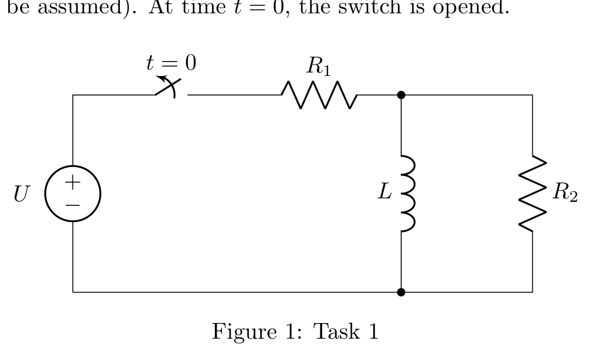
Oppsummering før bryteren åpnes ($t = 0^-$):
• Spolespenning: $v_L(0^-) = 0\text{ V}$ (kortslutning)
• Spolestrøm: $i_L(0^-) = 1.5\text{ A}$ (fullt oppladet magnetfelt)
• Motstand $R_2$: Fører 0 A fordi spolen kortslutter den
Hva skjer i neste mikrosekund når bryteren åpnes og kilden kobles vekk?
Task 1: Den Farlige Spenningsspissen (Flyback) & Utlading
Strømmen i en spole kan aldri endre seg momentant: $i_L(0^+) = i_L(0^-) = 1.5\text{ A}$.
Steg 2 – Ny kretsstruktur etter bryteråpning:
Kilden $U$ og $R_1$ er frakoblet. Den eneste lukkede veien for de $1.5\text{ A}$ er å gå ned gjennom spolen, langs bunnlederen, og **oppover** gjennom $R_2 = 48\,\Omega$.
Steg 3 – Beregn spenningsfallet:
Siden strømmen går inn i bunnen av $R_2$, blir potensialet på toppen lavere enn bunnen: $$v_L(0^+) = -i_L(0^+) \cdot R_2 = -(1.5\text{ A}) \cdot (48\,\Omega) = \mathbf{-72\text{ V}}$$ Spenningen hopper momentant fra $0\text{ V}$ til $-72\text{ V}$!
$$v_L(t) + R_2 i_L(t) = 0 \implies L \frac{di_L}{dt} + R_2 i_L(t) = 0 \implies \frac{di_L}{dt} + \frac{R_2}{L} i_L(t) = 0$$ Steg 2 – Finn tidskonstanten $\tau$:
$$\tau = \frac{L}{R_2} = \frac{0.12\text{ H}}{48\,\Omega} = 0.0025\text{ s} = \mathbf{2.5\text{ ms}} \implies \frac{1}{\tau} = 400\text{ s}^{-1}$$ Steg 3 – Skriv ut løsningen for $i_L(t)$:
$$\mathbf{i_L(t) = i_L(0^+) e^{-t/\tau} = 1.5 e^{-400t}\text{ A}} \quad (t \ge 0^+)$$ Steg 4 – Løs for når strømmen er 1 A:
$$1.5 e^{-400t} = 1 \implies e^{-400t} = \frac{2}{3} \implies e^{400t} = 1.5$$ $$400t = \ln(1.5) \approx 0.405465 \implies \mathbf{t = \frac{0.405465}{400} = 1.014\text{ ms}}$$
Respons i Spolen ved Bryteråpning
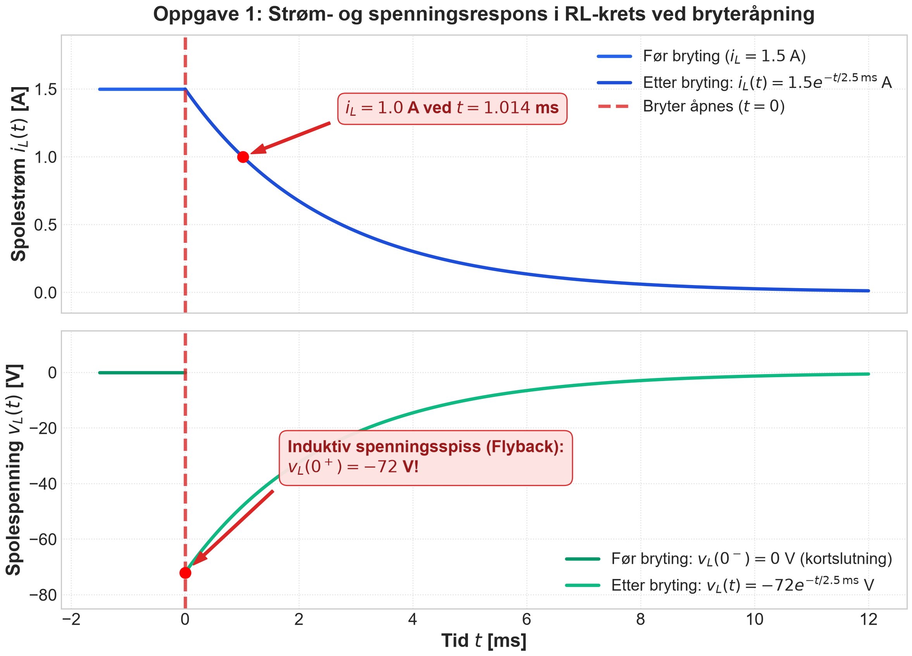
Hvorfor brenner reléer opp uten flyback-beskyttelse?
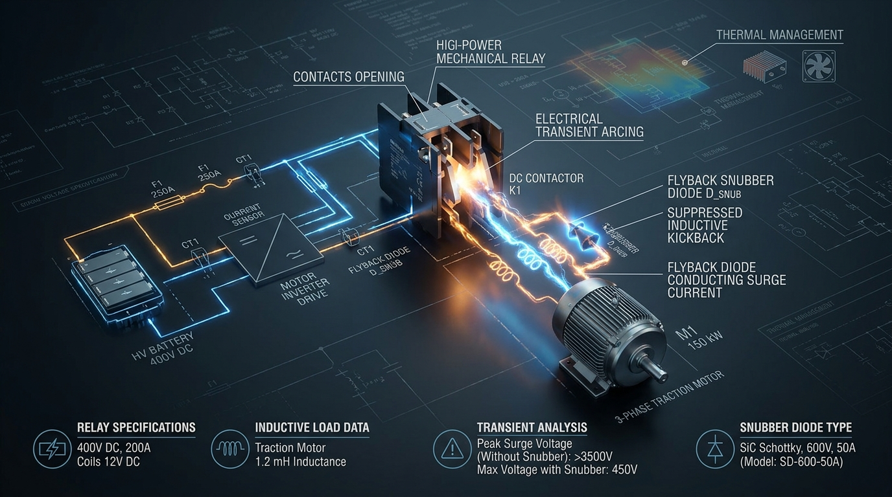
Task 2: Sekvensiell Svitsjing – Kretsskjema & Første Lading
Merk: Tidskonstanten $\tau = -1/s$ der $s$ er roten til den karakteristiske ligningen.
Karakteristisk ligning: $s + \frac{1}{RC} = 0 \implies s = -\frac{1}{RC}$.
Tidskonstanten er $\tau = -\frac{1}{s} = R \cdot C = 1000\,\Omega \times 10^{-6}\text{ F} = \mathbf{1\text{ ms}}$.
Steg 2 – Bruk standardformelen for 1. ordens trinnrespons:
$$v_C(t) = V_{\text{slutt}} + (V_{\text{start}} - V_{\text{slutt}}) e^{-t/\tau}$$ Med $V_{\text{start}} = 0\text{ V}$ og $V_{\text{slutt}} = +10\text{ V}$:
$$\mathbf{v_C(t) = 10(1 - e^{-t/\tau})\text{ V} = 10(1 - e^{-1000t})\text{ V}} \quad (0 \le t < \tau)$$
Kondensatorspenningen kan ikke endre seg sprangvis: $v_C(\tau^+) = v_C(\tau^-)$.
Steg 2 – Sett inn $t = \tau$:
$$v_C(\tau^+) = 10(1 - e^{-1}) = 10(1 - 0.367879) \approx \mathbf{6.321\text{ V}}$$
⚡ Originalt Kretsskjema (Figur 2 fra oppgaven)
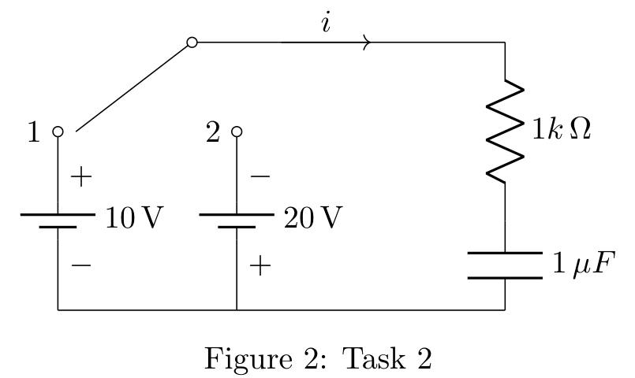
Status etter 1 tidskonstant:
• Kondensatorspenning: $v_C = 6.321\text{ V}$
• Kilde 1 er $+10\text{ V}$, Kilde 2 er $-20\text{ V}$
Hva skjer når bryteren vippes over til -20 V?
Task 2: Reversert Spenning & Det Voldsomme Strømspranget
Startverdi ved $t = \tau$: $V_{\text{start}} = v_C(\tau) = 10(1 - e^{-1}) \approx 6.321\text{ V}$.
Nytt sluttmål fra kilde 2: $V_{\text{slutt}} = -20\text{ V}$.
Steg 2 – Bruk tidsforsinket trinnrespons:
$$v_C(t) = V_{\text{slutt}} + [V_{\text{start}} - V_{\text{slutt}}] e^{-(t - \tau)/\tau}$$ $$v_C(t) = -20 + [6.321 - (-20)] e^{-(t - \tau)/\tau} = \mathbf{-20 + 26.321 e^{-(t - \tau)/\tau}\text{ V}}$$
$$i(\tau^-) = \frac{v_{\text{kilde}} - v_C(\tau^-)}{R} = \frac{10 - 6.321}{1000} = \mathbf{+3.68\text{ mA}}$$ Steg 2 – Finn strømmen like etter svitsjing ($t = \tau^+$):
Kildespenningen hopper momentant til $-20\text{ V}$, mens $v_C$ fortsatt er $+6.321\text{ V}$:
$$i(\tau^+) = \frac{-20 - 6.321}{1000} = \mathbf{-26.32\text{ mA}}$$ Konklusjon: Spenningen endrer seg mykt og kontinuerlig, men strømmen opplever et gigantisk sprang på nesten 30 mA!
Kondensatorspenning og Strømsprang
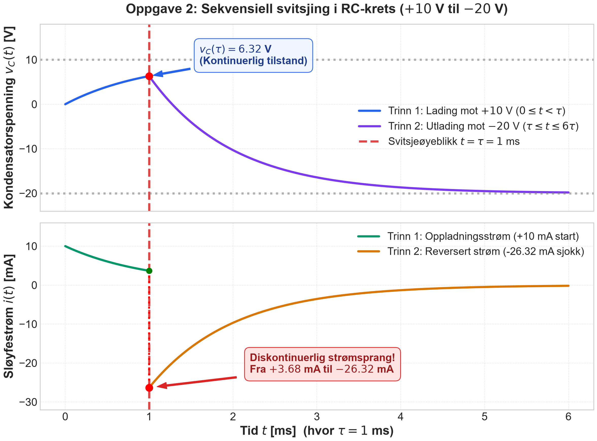
Hvorfor må elbiler «forlades» før de starter?
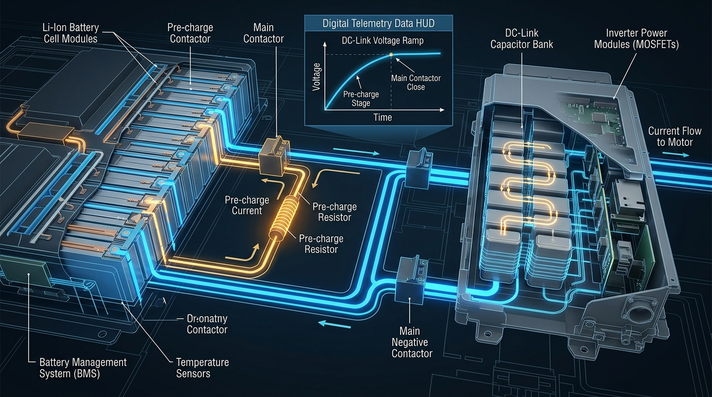
2. Kondensatoren lades kontrollert opp over $3\tau - 5\tau$ (ca. 200 ms).
3. Når spenningen er på 98 %, lukkes hovedkontaktoren helt trygt!
Task 3: Dynamisk Stabilitet – Kretsskjema & Differensialligning
1. Utled differensialligningen som beskriver $v_0(t)$ for $t > 0$.
2. Er differensialligningen homogen eller inhomogen? Begrunn kort svaret ditt.
• Kondensator: $i_c = C \frac{dv_0}{dt}$
• Motstand $R_1$: $i_{R1} = \frac{v_0}{R_1}$
• Avhengig strømkilde: Rettet oppover, så strøm ut av noden nedover er $-7 i_\Delta$
• Motstand $R_2$: $i_\Delta = \frac{v_0}{R_2}$
Steg 2 – Still opp Kirchhoffs strømlov (KCL):
$$C \frac{dv_0}{dt} + \frac{v_0}{R_1} - 7 i_\Delta + i_\Delta = 0 \implies C \frac{dv_0}{dt} + \frac{v_0}{R_1} - 6 i_\Delta = 0$$ Steg 3 – Sett inn $i_\Delta = \frac{v_0}{R_2}$ og del på $C$:
$$\mathbf{\frac{dv_0(t)}{dt} + \frac{1}{C}\left(\frac{1}{R_1} - \frac{6}{R_2}\right) v_0(t) = 0}$$
⚡ Originalt Kretsskjema (Figur 3 fra oppgaven)
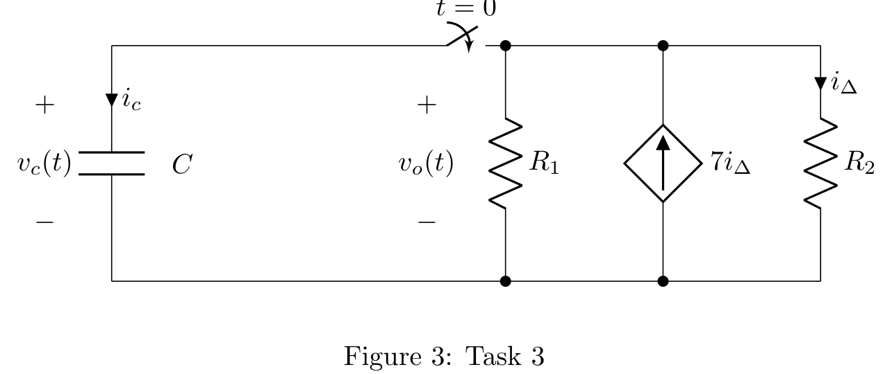
Alle ledd avhenger direkte av tilstandsvariabelen $v_0(t)$ eller dens deriverte. Likevektspunktet er origo: $\mathbf{v_0^* = 0\text{ V}}$.
Task 3: Ustabil Eksplosjon vs. Stabil Dempning
Tilfelle 1: $R_1 = 10\text{ k}\Omega$ (Deloppgave 3)
Steg 1 – Beregn netto konduktans:
$$G_{\text{eq}} = \frac{1}{10000} - \frac{6}{20000} = -0.2\text{ mS} < 0$$Steg 2 – Finn koeffisienten foran $v_0$:
$$\frac{G_{\text{eq}}}{C} = \frac{-0.0002}{5\times 10^{-6}} = -40\text{ s}^{-1}$$Steg 3 – Karakteristisk ligning: $s - 40 = 0 \implies \mathbf{\lambda = +40\text{ s}^{-1} > 0}$
USTABIL EKSPLOSJON! ($v_0(t) = v_0(0^+) e^{+40t}$)
Starter den på 10 V, eksploderer den til 146 V på bare 67 ms!
Tilfelle 2: $R_1 = 2\text{ k}\Omega$ (Deloppgave 4)
Steg 1 – Beregn netto konduktans:
$$G_{\text{eq}} = \frac{1}{2000} - \frac{6}{20000} = +0.2\text{ mS} > 0$$Steg 2 – Finn koeffisienten foran $v_0$:
$$\frac{G_{\text{eq}}}{C} = \frac{+0.0002}{5\times 10^{-6}} = +40\text{ s}^{-1}$$Steg 3 – Karakteristisk ligning: $s + 40 = 0 \implies \mathbf{\lambda = -40\text{ s}^{-1} < 0}$
STABIL DEMPNING! ($v_0(t) = v_0(0^+) e^{-40t}$)
Uansett startverdi konvergerer spenningen trygt tilbake til 0 V.
• Hvis $\lambda < 0$: Løsningen inneholder $e^{-\lambda t} \to 0$ (Stabil attraktor).
Stabilitetssammenligning (Oppgave 3)
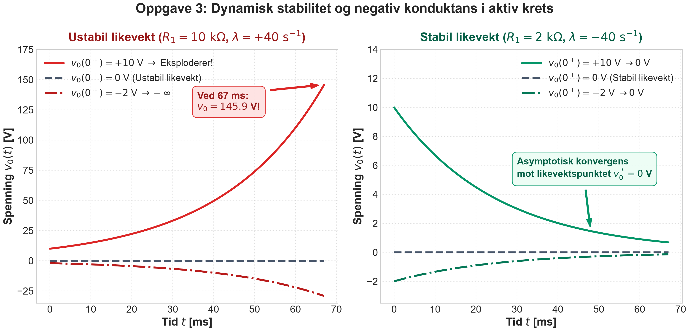
Når kraftnettet og fornybar energi begynner å svinge
Konstant-effekt-laster oppfører seg som negativ motstand!
I dag er elbilladere, datasentre og fornybare vekselrettere programmert til å trekke konstant effekt ($P = V \cdot I$).
Hvis nettspenningen $V$ synker et øyeblikk, øker omformeren strømmen $I$ for å holde effekten oppe. Dette betyr at differensiell motstand er negativ: $$\frac{dV}{dI} < 0 \implies R_{\text{diff}} < 0$$
Task 4: Strøm mellom To Kondensatorer – Kretsskjema
1. Vis at selv om kretsen inneholder to energilagre, er den bare et førsteordens system. (Hint: $i_c(t) = -i_{9c}(t) = i(t)$).
2. Beregn den tidsavhengige strømmen ($t \ge 0^+$).
Strømmen ut av $C$ må gå direkte inn i $9C$: $i_C(t) = -i_{9C}(t) = i(t)$. Total ladning er bevart: $$q_C(t) + q_{9C}(t) = Q_{\text{tot}} = C \cdot U$$ Steg 2 – Finn den algebraiske bindingsligningen:
$$C u_C(t) + 9C u_{9C}(t) = C U \implies u_C(t) + 9 u_{9C}(t) = U$$ Fordi spenningene er låst sammen, finnes det bare én uavhengig tilstand!
⚡ Originalt Kretsskjema (Figur 4 fra oppgaven)
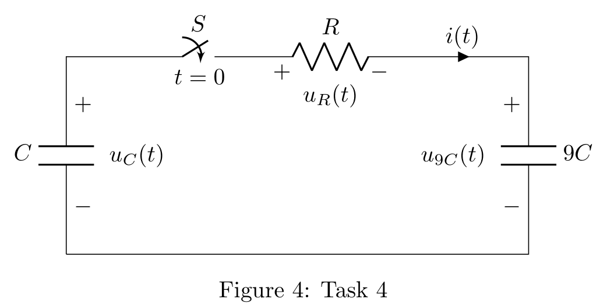
$$\frac{1}{C_{\text{eq}}} = \frac{1}{C} + \frac{1}{9C} = \frac{10}{9C} \implies C_{\text{eq}} = \mathbf{0.9 C}$$ Steg 2 – Finn tidskonstanten $\tau$: $\tau = R C_{\text{eq}} = \mathbf{0.9 RC}$.
Steg 3 – Initialstrøm ved $t = 0^+$: $i(0^+) = \frac{u_C(0^+) - u_{9C}(0^+)}{R} = \frac{U - 0}{R} = \frac{U}{R}$.
$$\mathbf{i(t) = \frac{U}{R} e^{-\frac{10t}{9RC}} = \frac{U}{R} e^{-t / (0.9 RC)}}$$
Task 4: To-Kondensator-Paradokset – Hvorfor tapes 90 %?
All energi er lagret i den lille kondensatoren $C$:
$$E_i = \frac{1}{2} C U^2$$ Steg 2 – Sluttspenning ved $t \to \infty$:
Ved ladningsbevaring deler de ladningen: $Q_{\text{tot}} = (C + 9C) V_f = C U \implies \mathbf{V_f = 0.1 U}$.
Steg 3 – Sluttenergi i begge kondensatorene:
$$E_f = \frac{1}{2}(10C)(0.1 U)^2 = \frac{1}{2}(10C)(0.01 U^2) = 0.1 \left(\frac{1}{2} C U^2\right) = \mathbf{0.1 E_i}$$
Spenning og Energitap (Oppgave 4)
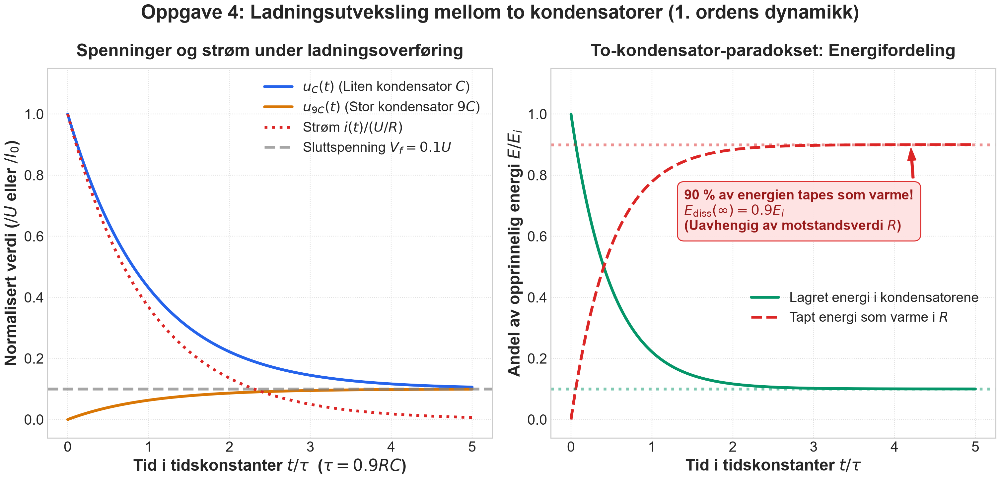
Task 5: Likevektsstyring – Kretsskjema & Åpen Sløyfe
(a) Utled differensialligningen som beskriver $i(t)$ samt den karakteristiske ligningen.
(b) For hvilket verdiområde av $k$ er kretsen stabil? Begrunn svaret.
(c) Finn uttrykket for en konstant verdi for kilden som funksjon av referansen: $\bar{u} = f(i^{\text{ref}})$.
(d) Sørg for at $\lim_{t\to\infty} i(t) = 4\text{ A}$ når $k = 3$.
$$u(t) - L \frac{di}{dt} - (-k i) - R_{\text{load}} i = 0 \implies \mathbf{L \frac{di}{dt} + (R_{\text{load}} - k) i(t) = u(t)}$$ Steg 2 – Karakteristisk rot: $Ls + (R_{\text{load}} - k) = 0 \implies s = -\frac{R_{\text{load}} - k}{L}$.
For stabilitet må polen ligge i venstre halvplan: $R_{\text{load}} - k > 0 \implies \mathbf{k < 6\,\Omega}$.
Steg 2 – Verifikasjon av løsning: $3 \frac{di}{dt} + 3 i = 12 \implies i(t) = 4(1 - e^{-t})\text{ A} \to \mathbf{4\text{ A}}$.
⚡ Originalt Kretsskjema (Figur 5 fra oppgaven)
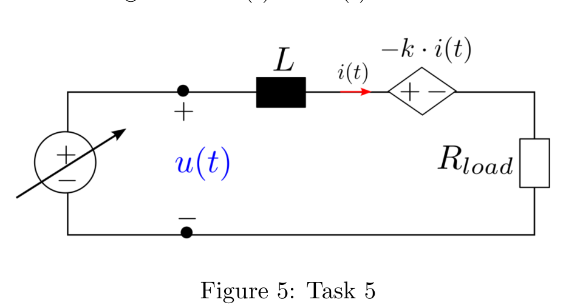
Hva er den skjulte fellen her?
Beregningen $\bar{u} = 12\text{ V}$ er en åpen sløyfe (feedforward). Den forutsetter at vi kjenner $R_{\text{load}} = 6\,\Omega$ med 100 % sikkerhet for all fremtid! Hva skjer hvis lasten endrer seg?
Task 6: Sjokket – Hvorfor Åpen Sløyfe Feiler Totalt
[Kontekst:] Vi er bekymret for parametrisk usikkerhet: lastmotstanden kan endre seg uforutsett uten at vi har mulighet til å oppdatere $\bar{u}$.
(a) Ved $t = 0$ endrer lastmotstanden seg brått til $R_{\text{load}} = 4\,\Omega$. Bestem den nye likevektsstrømmen. Opererer systemet fortsatt ved ønsket likevekt på $4\text{ A}$?
(b) Forklar hvorfor en ideell strømkilde $I_{\text{ref}}$ i direkte serie ikke er egnet.
$$\bar{i}_{\text{ny}} = \frac{\bar{u}}{R_{\text{load, ny}} - k} = \frac{12\text{ V}}{4\,\Omega - 3\,\Omega} = \frac{12}{1} = \mathbf{12\text{ A!}}$$
⚡ Originalt Kretsskjema (Figur 6 fra oppgaven)
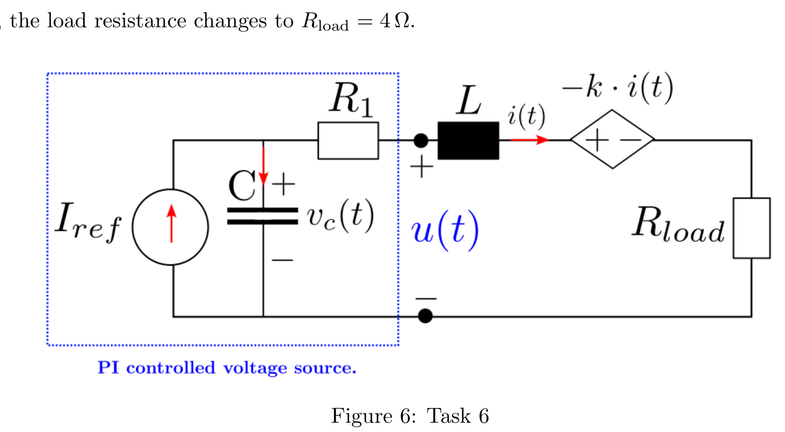
Hvis initialstrømmen $i(0) \ne I_{\text{ref}}$, ville en serie-strømkilde krevd en momentan strømendring. Siden $v_L = L \frac{di}{dt}$, ville spenningen blitt uendelig ($v_L \to \infty$), som brenner opp kretsen!
Steg 2 – Kveler all naturlig dynamikk:
En ideell strømkilde har uendelig impedans og fjerner muligheten til å forme responstid og dempning.
Task 6: Løsningen – Den Digitale PI-Regulatoren
(d) Bestem likevektsstrømmen $\bar{i} = \lim_{t\to\infty} i(t)$. Vis at dette gir $\bar{i} = I_{\text{ref}} = 4\text{ A}$ fullstendig uavhengig av endringer i $R_{\text{load}}$ eller andre parametere.
(e) Finn ligningen for $u(t)$ og vis at dette tilsvarer en klassisk PI-regulator.
Steg 2 – Deriver og bruk KCL ($\frac{dv_C}{dt} = \frac{1}{C}(I_{\text{ref}} - i)$):
$$\mathbf{L \frac{d^2 i}{dt^2} + (R_1 + R_{\text{load}} - k)\frac{di}{dt} + \frac{1}{C} i(t) = \frac{1}{C} I_{\text{ref}}}$$ Steg 3 – Stasjonærtilstand ($t \to \infty$): Alle deriverte dør ut:
$$0 + 0 + \frac{1}{C} \bar{i} = \frac{1}{C} I_{\text{ref}} \implies \mathbf{\bar{i} = I_{\text{ref}} = 4\text{ A}}$$ $R_{\text{load}}$ faller fullstendig ut! Strømmen blir 4 A uansett lastendring!
Åpen Sløyfe (Feiler) vs PI-Regulering (Gjenoppretter)
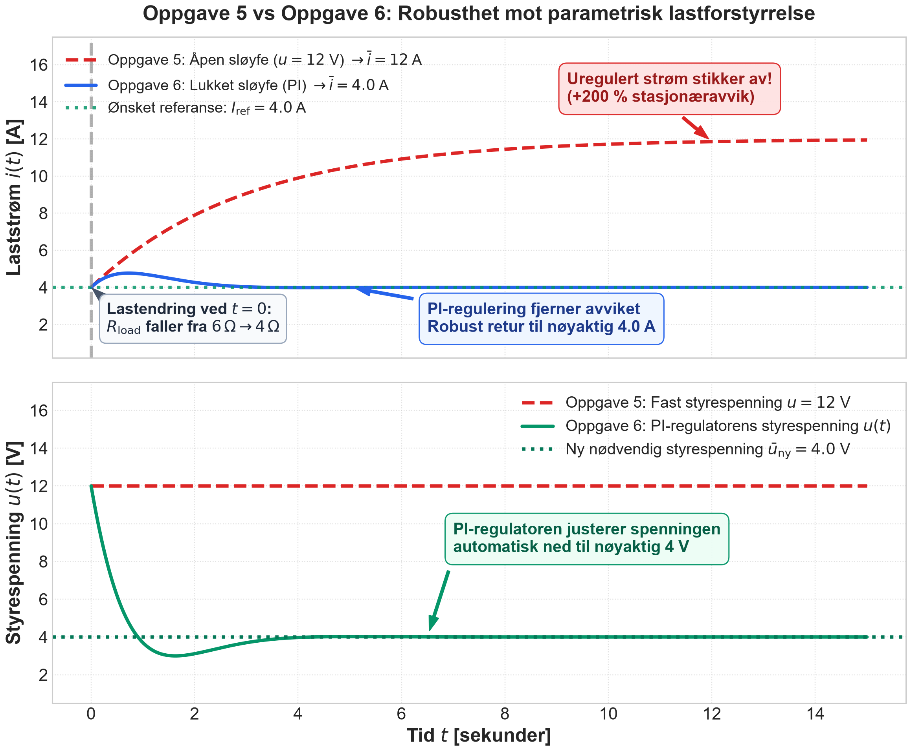
Mikrokontrollere, Elbil-motorer & Digital PI-Styring
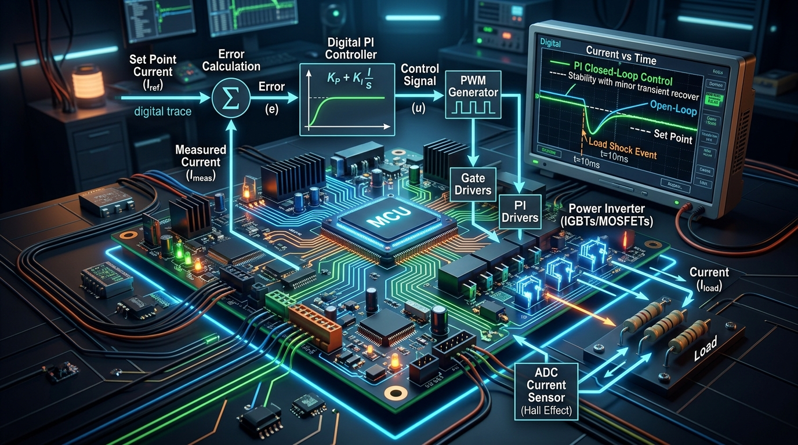
Fra kretsdiagram til C-kode
Kondensatoren og motstanden i den blå boksen implementeres digitalt i en mikrokontroller (f.eks. STM32 eller TI C2000) ved 20 000 ganger i sekundet (20 kHz):
float e = I_ref - I_meas; // 1. Regn ut avviketintegrator += (1.0f / C) * e * Ts; // 2. Kondensatorlading (I-ledd)float u = R1 * e + integrator + u0; // 3. Reguleringsspenning (PI)set_pwm(u); // 4. Send til transistorene
De 4 Store Prinsippene i SLT-1
1. Tilstandskontinuitet
Spoler bevarer strøm ($i_L$), kondensatorer bevarer spenning ($v_C$). Hvis du tvinger frem et brudd, svarer kretsen med voldsomme spenningsspisser (flyback) eller strømsprang (inrush).
2. Dynamisk Stabilitet
Aktive kilder kan oppføre seg som negativ motstand. Egenverdier med $\lambda > 0$ gir ustabil eksplosjon; $\lambda < 0$ gir stabil dempning mot likevekt.
3. Bevaringslover & Paradokser
Ladningsbevaring reduserer systemets orden. To kondensatorer i en lukket krets taper alltid 90 % av energien som varme under utligning, uavhengig av motstandsverdi.
4. PI-Reguleringens Magi
Foroverkobling (åpen sløyfe) svikter ved den minste lastendring. Tilbakekobling med integralvirkning gir uendelig DC-forsterkning og tvinger feilen til nøyaktig 0 %!
Lykke til med TET4100! Du har nå full kontroll på både formlene, fysikken, kretsene og de virkelige anvendelsene.